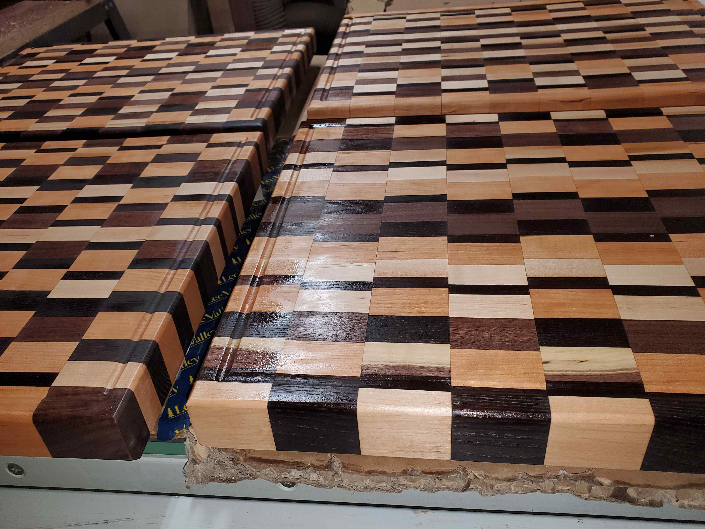
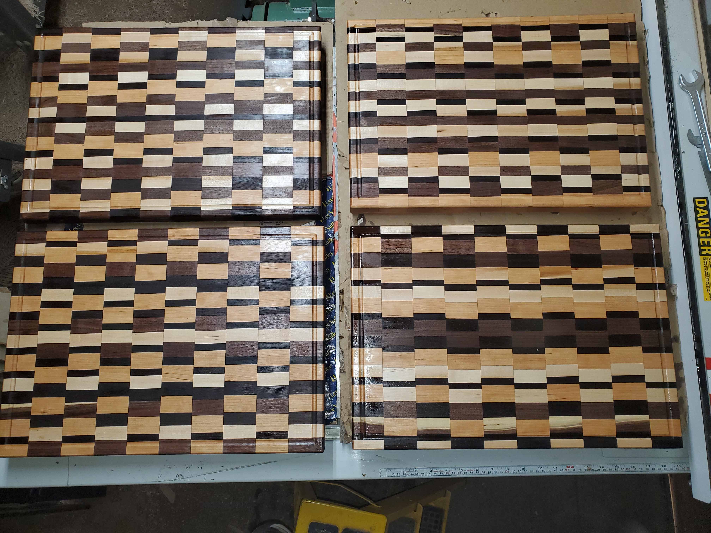

A small shop doing honest work with real wood.
The General Woodshop started the way most shops do — with a lathe in the garage and a pile of wood that was supposed to be firewood. One turned goblet became two, then a set. A slab that was too nice to burn became a cutting board. And somewhere along the way, what started as a hobby turned into something real.
We're still a small operation. No employees, no showroom, no CNC machines. Just hand tools, a lathe, a table saw, a planer, and the time it takes to do things right. Every piece that leaves the shop gets the same attention whether it's a simple cup or a patterned end-grain cutting board that took a week to glue up.

We use local hardwoods whenever possible — maple, cherry, walnut, oak, ash. A lot of our best material comes from trees that came down in storms or were taken out for construction. Wood that would have been chipped or burned gets a second life as something useful and, if we've done our job, something beautiful.
We have a thing for spalted maple. That dark veining you see in a lot of our pieces? That's the early stages of decay — fungal lines that run through the grain before the wood breaks down. You have to catch it at the right moment. Too early and it's just plain maple. Too late and it's punky and unusable. When you get it right, there's nothing else like it.

Every piece is shaped, sanded, and finished by hand. No shortcuts, no automation. You can feel the difference.
Most of our material comes from local trees. Salvaged, milled, and dried right here before it ever hits the shop.
We use food-safe finishes, proper joinery, and enough coats of oil that these pieces will still look good in twenty years.